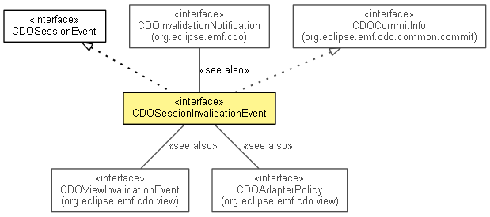

org.eclipse.emf.cdo.session
Interface CDOSessionInvalidationEvent
- All Superinterfaces:
- CDOBranchPoint, CDOChangeKindProvider, CDOChangeSetData, CDOCommitData, CDOCommitInfo, CDOSessionEvent, CDOTimeProvider, IEvent
- public interface CDOSessionInvalidationEvent
- extends CDOSessionEvent, CDOCommitInfo

A session event fired when passive updates (commit notifications) are being received from a
remote repository. Passive updates must be enabled for
this event to be fired.
- Since:
- 2.0
- See Also:
CDOInvalidationNotification,
CDOAdapterPolicy- No Implement
- This interface is not intended to be implemented by clients.
- No Extend
- This interface is not intended to be extended by clients.
LOCAL_ROLLBACK
static final long LOCAL_ROLLBACK
- See Also:
- Constant Field Values
getLocalTransaction
CDOTransaction getLocalTransaction()
- Returns the transaction that was committed and thereby caused this event to be emitted if this transaction is
local, or
null if the transaction was remote.
- Since:
- 4.0
getView
@Deprecated
CDOView getView()
- Deprecated. Use
getLocalTransaction().
isRemote
boolean isRemote()
- Since:
- 3.0
Copyright (c) 2011, 2012 Eike Stepper (Berlin, Germany) and others.